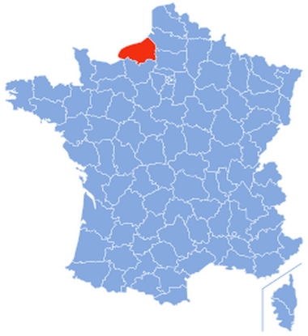

Le lycée Raymond Queneau est situé en plein coeur de Yvetot, commune de Seine Maritime se trouvant en plein milieu du Pays de Caux.

Site rectorat - Site Lycée Raymond Queneau - Section BTS SN - 2018